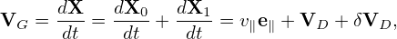

Examining the left-hand side of Eq. (), it is ready to find that the characteristic curves of this equation are given by the following equations:
|
| (292) |
 | (293) |
 | (294) |
(It is instructive to notice that the kinetic energy ùúÄ is conserved along the characteristic curves while the real kinetic energy of a particle is usually not conserved in a perturbed electromagnetic Ô¨Åeld. This may be an indication that Frieman-Chen equation neglects the velocity space nonlinearity.) For notation ease, we denote the total guiding-center velocity by VG, i.e.,
 | (295) |
where
 | (296) |
In the above, v∥ can be obtained by using v∥ = œÉ. However œÉ is not easy to determine since it changes with time for trapped particles. In practice, we get v∥ from an evolution equation. This evolution equation for v∥ can be obtained by combining the equations for ùúÄ and Œº. Next, we derive this equation.
Using the definition μ = v⊥2∕(2B0), equation (294), i.e., dμ∕dt = 0, is written as
 | (297) |
which is written as
|
| (298) |
which can be further written as
 | (299) |
Using the definition of the characteristics, the right-hand side of the above equation can be expanded, giving
|
| (300) |
where dX∕dt, dùúÄ‚àïdt, and dŒº‚àïdt are given by Eq. (292), (293), and (294), respectively. Using Eqs. (292)-(294) and ‚àÇB0‚àï‚àÇt = 0, equation (300) is reduced to
 | (301) |
On the other hand, equation (293), i.e., dùúÄ‚àïdt = 0, is written as
 | (302) |
which can be further written as
 | (303) |
Using Eq. (301), the above equation is written as
 | (304) |
which is the equation for the time evolution of v∥. This equation involves dX∕dt, i,e., the guiding-center drift, which is given by Eq. (292). Equation (304) for v∥ can be simplified by noting that the Frieman-Chen equation is correct only to the second order, O(λ2), and thus the characteristics need to be correct only to the first order O(λ) and higher order terms can be dropped. Note that, in the guiding-center drift dX∕dt given by Eq. (292), only the v∥e∥ term in  is of order O(λ0), all the other terms are of O(λ1). Using this, accurate to order O(λ1), equation (304) is written as
 | (305) |
which is the time evolution equation ready to be used for numerically advancing v∥. Note that only the mirror force −μe∥⋅∇B appears in Eq. (305) and there is no parallel acceleration term qv∥δE∥∕m in Eq. (305). This is because δE∥ = −b ⋅∇δΦ − ∂δA∥∕∂t is of order O(λ2) and (**check** the terms involving E∥ are of O(λ3) or higher and thus have been dropped in deriving Frieman-Chen equation.)